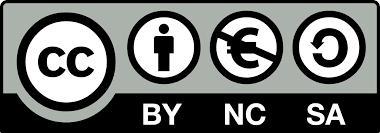

eli sivun jakaminen palstoihin
Sivun voi asemoida eli jakaa palstoihin tai osioihin usealla tavalla. Taulukot ovat yksi tavoista, mutta niiden käyttö muuhun kuin "oikean" taulukon tekoon ei ole suositeltavaa. Parempi tapa on tehdä sivun asemointi div-tagien avulla. Jokaiselle osiolle annetaan oma nimi. Tyylimäärittelyt ja käskyt osion paikasta sijoitetaan head-osaan koodissa käyttäen style-tagia. Koodin body-osassa sitten viitatan näihin määrittelyihin div-tagilla.
Tämä sivu on jaettu neljään osaan: otsikko, sivupalkki, sisus ja alin. Katso löydätkö sivun lähdekoodista osioiden tyylimäärittelyt ja miten niihin on viitattu div-tageissa.
Asemoinnin lisäksi tämän sivun sivupalkissa on esimerkki luettelosta. Se tehdään ul-tagin avulla (katso tarkemmin lähdekoodista). Numeroidun luettelon saa saman kaltaisesti mutta käyttämällä ol-tagia.
Jos haluat tietää enemmän HTML-koodaamisesta, netistä löytyy paljon materiaalia. Esimerkiksi W3Schoolsin-sivuilta löytyy lisää tägejä, joita voi kokeilla omilla sivuillaan.

Maria Öhman, 2015